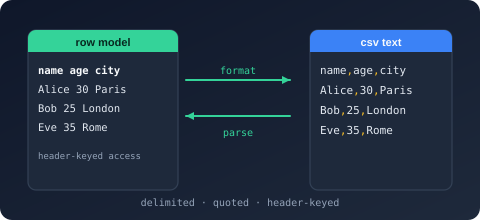

Namespace Bodu.Text.Delimited.Document

Purpose
Bodu.Text.Delimited.Document is the read-only document object model of Bodu.Text.Delimited, shaped after System.Text.Json's JsonDocument / JsonElement. A parse produces a disposable DelimitedDocument whose root is the array of records; each DelimitedElement is a lightweight struct cursor over a record (a header-keyed object, or a positional array under NoHeader) or a field. Prefer it over the mutable Bodu.Text.Delimited.Nodes tier when you only need to query.
Key types
- DelimitedDocument — the disposable owner:
Parse(with an optional DelimitedReaderOptions),RootElement, andHeaders. - DelimitedElement — the cursor:
ValueKind(a DelimitedValueKind),GetString,GetProperty/TryGetProperty, an integer indexer,GetArrayLength, andEnumerateArray/EnumerateObject. - DelimitedElement.ArrayEnumerator / DelimitedElement.ObjectEnumerator — the struct enumerators returned by
EnumerateArray/EnumerateObject. - DelimitedProperty — a
Name/Valuepair yielded byEnumerateObject.
Example
using Bodu.Text.Delimited.Document;
using DelimitedDocument document = DelimitedDocument.Parse("symbol,qty\nAAPL,10\nMSFT,5\n"u8);
foreach (DelimitedElement record in document.RootElement.EnumerateArray())
{
string symbol = record.GetProperty("symbol").GetString();
string qty = record.GetProperty("qty").GetString();
}
Notes
- Lifetime. Elements are only valid while their document is undisposed.
- String-only values. Every field is a
Stringelement; convert numbers and dates yourself or bind through the DelimitedSerializer. - Streaming alternative. For very large files, prefer the serializer's
DeserializeAsyncEnumerableAsync<TRecord>or the Utf8DelimitedReader token loop over materializing a document. - See also: the line-formats introduction and the delimited guide.
Classes
DelimitedDocument
Provides a read-only, forward-parsed view over a delimited (CSV/TSV) document, shaped after System.Text.Json's
JsonDocument. The document is an array of records.
Structs
DelimitedElement
Represents a single element — the document array, a record, or a field value — within a
DelimitedDocument, shaped after System.Text.Json's JsonElement.
DelimitedElement.ArrayEnumerator
Enumerates the child elements of a DelimitedElement array.
DelimitedElement.ObjectEnumerator
Enumerates the fields of a DelimitedElement record object.
DelimitedProperty
Represents a single column-name/value field of a DelimitedElement record object.